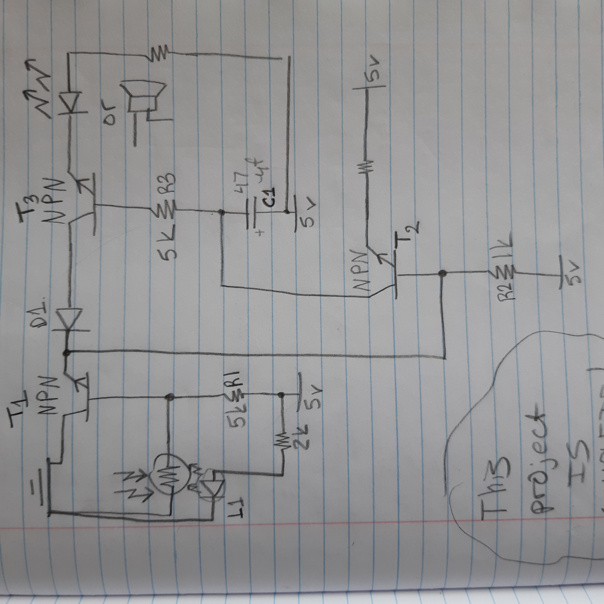
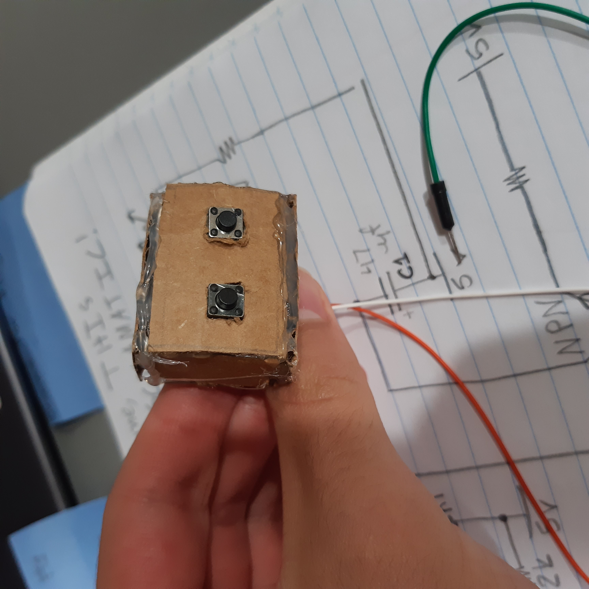

Personal Door Alarm
This projects is the result of people entering my room unwanted or frequently. I am sure all of you have experienced family members who enter you room and don’t close the door on their way out. Well, this is my solution.
This alarm sounds a loud buzzer when the door is opened.
Here is the schematic: 
Here is how it works:
First you are going to need some sort of reflector on your door. This alarm was built on a breadboard and placed on the floor right next to my door. The relfector was a white paper square, side length of 1 in. That paper was on a L shaped cardboard mount, which was taped to the bottom right corner of my door (my door swings open to the left, clockwise). The photoresistor detects the light that bounces off the reflector from the L1 LED. That’s how the circuit knows if the door was opened. If it was, the amount of light will decrease which will increase the resistance on the photoresistor.

I also tried various LEDs including IR ones. But I think the white LED works best. Also I tried aluminium foil as a reflector for both white and IR LEDs, but it doesn’t work very well. I also didn’t have a small mirror to put there. If you do, that will work great!
When the door is closed, the light is high, so the resistance of the pr (from now on I will call this photoresistor) is low which allows a sufficient amount of negative charge to flow into the base of T1, which turns it off. If T1 is off then T3 is also off, which then the buzzer is off. But, if the door was opened, then the resistance of the pr becomes high. This stops a sufficient amount of electrons flowing into the base of T1, which then turns it on. Then electrons flow through the D1 diode and into the collector of T3 which turns it on. Thus the buzzer sounds. However, the base of T3 is connected to a capacitor. This starts to charge while T3 is on. Once charged it will now repel the electrons flowing from the base of T3, effectivly turning the transistor off. Which turns the buzzer off. Now you can close the door again or whatever. But now for the next cycle, we have to discharge the capacitor. That’s the purpose of T2. Once you’ve closed the door, the resistance of the pr becomes low. Which turns T1 off, also allowing T2 to turn on (Because the negative charge on the base of T2 will keep it off, unless T1 is off]). This allows C1 to discharge through T2 and through R2 and whatever resistor you put on the emitor of T2. I put a 10K resistor. But C1 won’t discharge into the base of T3 because that’s not how transistors work. Theoretically, a transistor is made up of 2 diodes (a diode is a semi conductive electronic component that allows electricity to flow only one way. It works by having an n-type and a p-type material that will repel electrons from one side. That isn’t the scope of this article but if you guys want I could explain it later, let me know. If you want a more in depth explanation: here) that are positioned nanometrically together. So you can’t just have to diodes touching each other. That’s not how physics works. But anyway, the two diodes positioned in such a way create an electronic switch. And since the diodes only allow electricity to flow from the collector to the base, the diodes won’t allow it to happen the other way. So C1 has only one place to discharge to, through T2. This allows C1 to opperate correctly the next time. Also, you actually don’t need D1. You can replace it with a piece of wire. It is completely useless!
Also the capacitance of C1 is too low, so the alarm will be short. If you want one slightly longer, try a 470 mircofarad one or try a bunch of 10 microfarands in series/parallel. Also the resistance of R1 will determine how sensative T1 is. So play around with them.

Now you’re probably wondering: ‘But Burak, what if I want to enter the room? Will it still go off?’
Yes. Yes it will…
But if you create a button with a code on it, that only you know, which deactivates the alarm…
Now that will work.
But that code part is a bit too complicated for this simple project. So what I did, was I put two buttons in series and placed them in a cardboard box I built and taped to the the front of my wall next to the ‘outside door’.

Now I didn’t actually draw this part of the ciruit, but you could probably engineer something along these lines. Build a copy of the circuit of T3, with the capacitor and resistor. Now, connect one end of the buttons to ground and the other to the collector of the transistor, T4. Then T4’s output should be connected to the base of T3. This way, once you press both buttons for a sufficient amount of time, T4 will turn on which will turn T3 off. But once the capacitor on T4 is charged it will sound. Also make a circuit to discharge T4 and keep the capacitance of the capacitor on T4 high so you have time to get in.
But remember, when you press the two buttons, press them in some combination first, covering the pad with your hands, as to not reveal to your intrusive family that the code is just long pressing both of the buttons at once.
If you’d like to see it in action: click here
. . . . . . . . . . . . . .
Subscribe to Burak Ayyorgun
Get the latest posts delivered right to your inbox